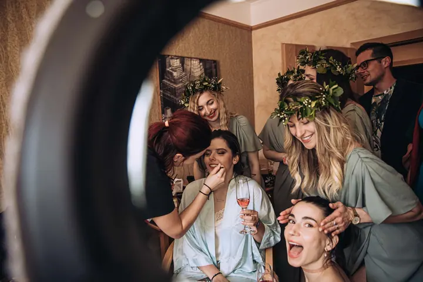
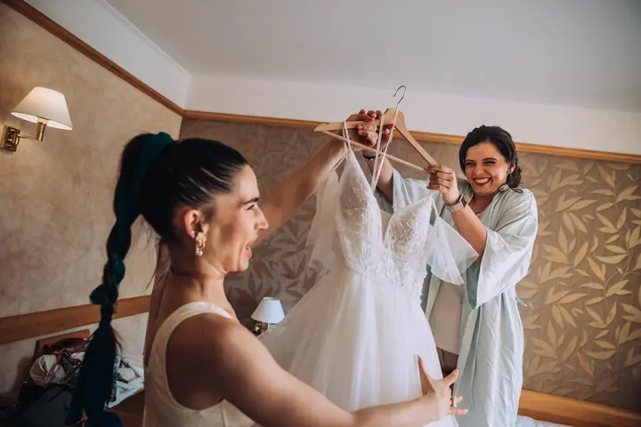
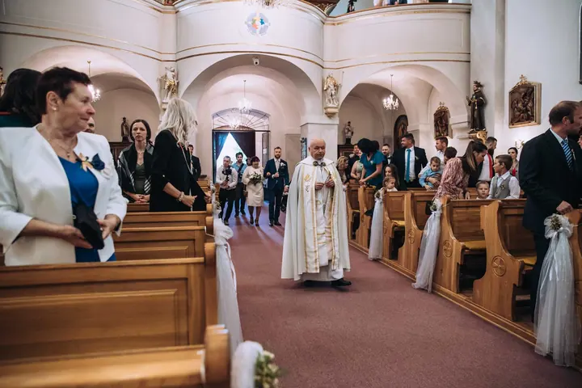

jedna
Svatební fotografie
Fotím celý svatební den od příprav až po večerní oslavu. Snažím se být nenápadným pozorovatelem, který doprovází úsměvem a je připravený na každou spontánní chvíli.


Jmenuji se Radek Lavička a jsem svatební fotograf. Fotím celý váš den od příprav přes obřad až po večerní oslavy. Fotky mají být přirozené a mají v sobě nést emoce, které se nedají zopakovat.
Více o mně
Co fotím
jedna
Fotím celý svatební den od příprav až po večerní oslavu. Snažím se být nenápadným pozorovatelem, který doprovází úsměvem a je připravený na každou spontánní chvíli.
dvě
Klasické ateliérové fotografie v prostorném ateliéru i focení v exteriéru. Fotím také business portréty.
tři
Fotím firemní akce a další události. Zachytím atmosféru setkání i genius loci místa, kde se odehrává.
Najdete mě často na motokrosové trati, kde ležím v trávě pár centimetrů od předního kola motorky. Pro dobrou fotku udělám maximum.

Snažím se být neviditelný, ale vždycky poblíž


Za objektivem
Fotím váš život. Tímhle mottem začala moje cesta profesionálního svatebního fotografa, i když mě často najdete taky na motokrosové trati, kde ležím pod koly motorek, a to skoro doslova. Pro dobrou fotku udělám maximum, takže mi nevadí vlézt po pás do vody, vylézt na strom nebo si lehnout do trávy.
Při focení se snažím být neviditelný, aby nic nenarušilo, jak se ten okamžik doopravdy odehrává. Když je ale potřeba pomoct, jsem vždycky poblíž. Svoje první svatební fotky jsem pořídil na kompakt ze zastavárny a dnes na to vzpomínám s úsměvem. Teď za vámi přijedu dobře připravený a nikdy nevyrazím fotit svatbu bez náhradního aparátu a objektivů.
Kromě svateb fotím portréty v ateliéru i venku, firemní akce a sport. Pokaždé mi jde o to zachytit emoce, atmosféru důležitých chvil a genius loci místa, kde se odehrávají.
Radek
Pošlete mi termín a pár slov o vaší svatbě. Domluvíme se, jestli máte termín u mě volný a který balíček vám bude vyhovovat.
Projdeme spolu harmonogram dne, místa a to, na čem vám záleží. Díky tomu přijedu připravený i na nečekané situace.
Fotím nenápadně a nechávám věci plynout. Když je potřeba poradit nebo pomoct, jsem vždycky poblíž. Náhradní aparát mám pokaždé s sebou.
Dostanete retušované fotografie vytištěné na kvalitním fotopapíře ve formátu 13×19 a stovky dalších upravených záběrů v plné kvalitě na USB flash disku.
Portfolio
Fotografie jsou ilustrační
Otázky
Celodenní focení v délce 12 až 15 hodin vychází od 31 000 Kč, desetihodinové od 26 000 Kč. Pětihodinový balíček za 15 000 Kč nabízím jen mimo hlavní svatební sezónu.
Podle balíčku 30 až 70 retušovaných fotografií vytištěných ve formátu 13×19 na kvalitním fotopapíře a k tomu nejméně 200 až 600 upravených záběrů v plné kvalitě na USB flash disku.
Mám v autě vždy spoustu věcí, které se můžou hodit, a nikdy nejedu fotit svatbu bez náhradního aparátu a objektivů. Jedinečné momenty se prostě nedají opakovat.
Ano. Ateliérové focení obvykle vychází od 1 800 Kč, například za 40 minut focení a 6 vytištěných retušovaných fotografií. Business portrét stojí 800 Kč za první fotografii.
Napište pár vět o tom, co si představujete. · +420 731 467 415